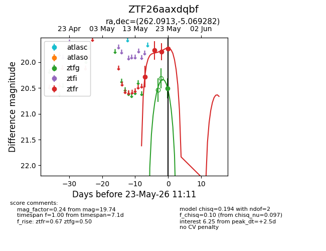
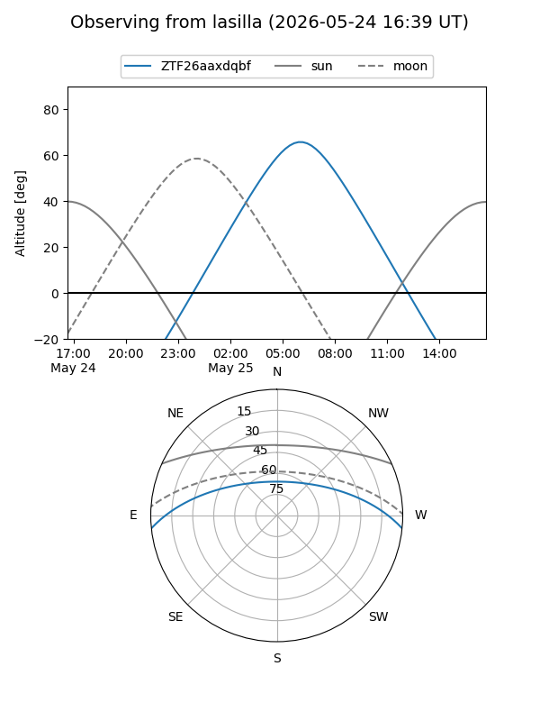
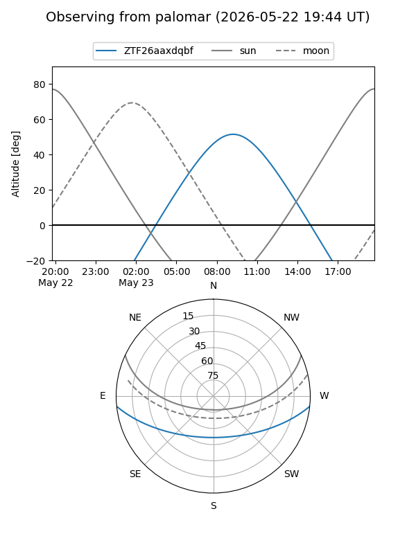
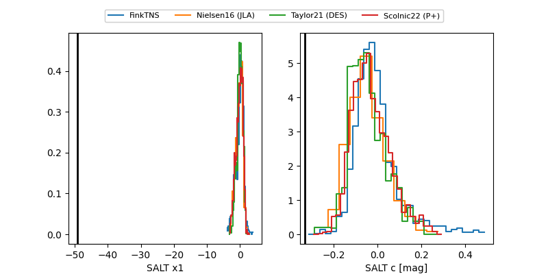

ZTF26aaxdqbf
Target ZTF26aaxdqbf at 2026-05-23 11:12
Aliases and brokers:
lsst-FINK: link
lsst-Lasair: link
lsst-ALeRCE: link
ztf-FINK: link
ztf-Lasair: link
ztf-ALeRCE: link
alt names
ZTF26aaxdqbf (ztf,fink_ztf)
Coordinates:
equatorial (ra, dec) = 262.0913,-5.06928
equatorial (HMS+DMS) = 17:28:21.91,-05:04:09.41
galactic (l, b) = (18.4996,+15.90565)
Flags:
Photometry:
last ztfg=20.51, ztfr=19.74
1 ztfg, 4 ztfr detections
Lightcurve

Visibility


Additional plots
